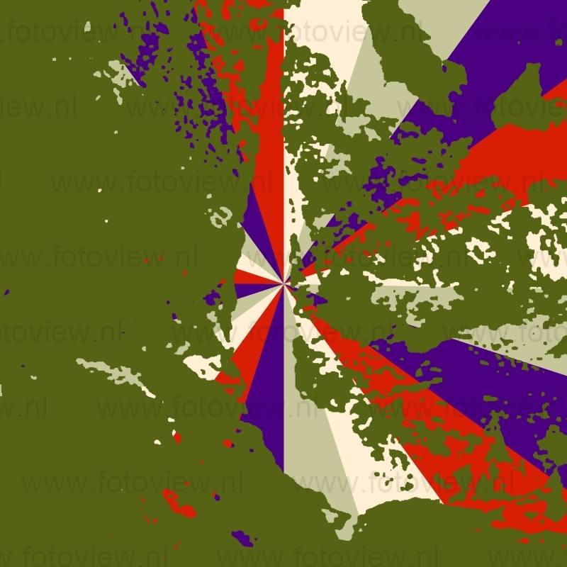

O atual município de Barra do Turvo foi fundado por Antonio Bueno Sampaio, vindo de Iporanga, por volta de 1852 que se estabeleceu com plantação e criação de porcos, na confluência do rio Turvo com o rio Pardo. Naquela época tudo era difícil e o transporte mais usado era o de tração animal: no lombo de burros e mulas, ou, canoas de madeira. A terra apesar de extremamente acidentada era fértil e o feijão surgia como a principal cultura da região. O extrativismo do palmito Jussara surgiu também como uma oportunidade e uma ilusão econômica para muitas famílias rurais. Depois de vários ciclos extrativistas e agropecuário (porcos e milhos, feijão, Jussara, gado, búfalo e agrofloresta…), hoje em dia a paisagem é dominada pelos pastos nos vales e baixo de encostas, agrofloresta nas encostas e pela Mata Atlântica nos cumes e encostas. Barra do Turvo teve sua maior fartura no período entre 1910 e 1930, quando foi grande a produção agrícola e pecuária. Grande quantidade desses produtos era transformada no próprio município, fabricando assim rapadura, aguardente e farinha de mandioca. Criadores de porcos conduziram suas manadas as vezes com mais 500 cabeças a Itapeva, rumo aos frigoríficos, cortando sertões em viagens que duravam 20 a 25 dias para chegar a seu destino. Tropas de mulas partiam em direção a Iporanga, Apiaí, Eldorado e Iguape, levando produtos agrícolas. Utilizavam-se também de canoas como meio de transporte até Iguape, onde iam buscar mercadorias ou à Tradicional Festa de Bom Jesus.
